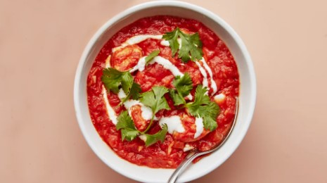

Chicken Tomato Curry

Ingredients
- 3 tablespoons ghee, coconut oil, or extra-virgin olive oil
- 1 large red onion, cut into ½-inch wedges
- 1 2-inch piece ginger, peeled, finely grated
- 4 garlic cloves, crushed
- Kosher salt
- 1 tablespoon plus 1 teaspoon garam masala
- 1 bay leaf
- 1/2 teaspoon crushed red pepper flakes
- 2 tablespoons honey
- 1 28-ounce can whole peeled tomatoes
- 1 15-ounce can coconut milk
- 3 skinless, boneless chicken breasts (about 1½ pounds total), cut into 1-inch-thick pieces
- 1/2 cup whole-milk Greek yogurt
- 1/2 cup coarsely chopped cilantro
Instructions
-
Heat ghee in a large wide saucepan over medium-high. Add onion and cook, turning occasionally, until undersides are golden brown, about 2 minutes. Add ginger and garlic and cook, stirring, until softened, about 2 minutes; season with salt. Add garam masala, bay leaf, and red pepper and cook until fragrant, about 30 seconds. Stir in honey and cook until slightly caramelized, about 1 minute.
-
Add tomatoes along with juices and bring to a boil, smashing down on tomatoes with a wooden spoon until pieces are no bigger than 1". Reduce heat to medium and cook, stirring often and scraping up browned bits from bottom of pot, until sauce thickens, 8–10 minutes. Add coconut milk and cook, stirring occasionally, until sauce thickens, 20–25 minutes; taste and season with salt, if needed. Add chicken strips and reduce heat to low. Cook, partially covered, until chicken is cooked through, 8–10 minutes. Season with salt.
-
Stir yogurt, a big pinch of salt, and 2 Tbsp. water in a small bowl.
-
Drizzle yogurt sauce over stew. Top with cilantro before serving.
-
Do Ahead: Curry (without yogurt sauce) can be made 2 days ahead. Cover and chill.